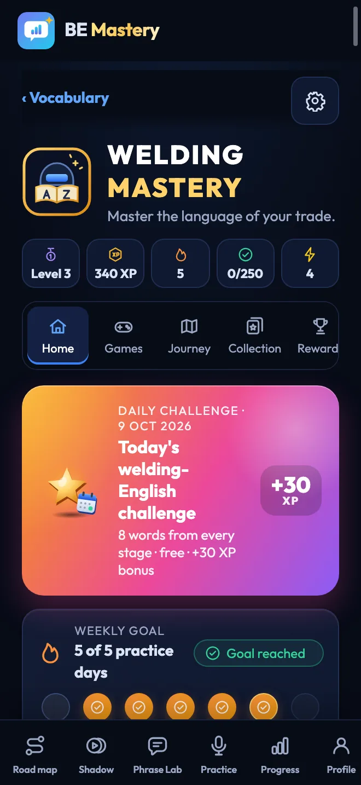
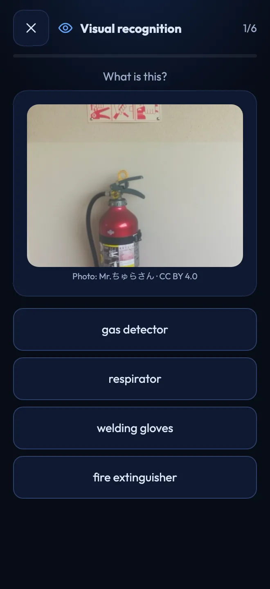

In arrivo su iPhone
L'app per iPhone è in revisione da Apple. Un solo account porterà la tua progressione su entrambi i telefoni.
Pratica con l'IA. Imita veri oratori. Pratica con persone reali. Costruisci la sicurezza per le conversazioni vere.
Scarica BE Mastery
Gratuita su Android, presto su iPhone · Accedi con Apple, Google o e-mail · La tua progressione ti segue da un telefono all'altro · Guida in 15 lingue.


Le ultime novità di BE Mastery.
L'app per iPhone è in revisione da Apple. Un solo account porterà la tua progressione su entrambi i telefoni.
Un tocco per salvare la tua progressione e portarla da iPhone ad Android.
La tua serie, il passo di oggi e i tuoi Consigliati, senza aprire l'app.
Ogni registrazione si riproduce nel momento in cui ti fermi, e Phrase Lab legge il tuo testo ad alta voce.
Dieci mestieri, simulazioni di lavoro, coach per i colloqui e vere frasi di officina da imitare.
Vedi ogni frase dello Shadowing nella tua lingua e in fonetica, parola per parola.
Turni cronometrati con un vero partner, e un resoconto privato sulla tua parte della chiamata.
English Mastery e Welding Mastery: otto giochi ciascuno, una missione del giorno e badge di abilità.
Conoscere l'inglese non significa parlarlo con sicurezza.
Lo leggi senza problemi. Segui la riunione. Poi arriva il tuo turno, e la frase che avevi pronta arriva un attimo troppo tardi — così dici la versione più corta, più piccola.
Quel divario non è una questione di conoscenza. È una questione di esercizio. Si chiude come per i musicisti e gli atleti: un po', ad alta voce, ogni giorno.
Una sessione guidata al giorno per dodici settimane, in quattro passi brevi. Non scegli tu cosa studiare. La tabella di marcia lo sa già. Ti basta presentarti e parlare.
Le frasi di oggi, o un vero oratore, e la situazione a cui appartengono.
Imita finché il ritmo non ti sembra più estraneo.
Dillo con la tua voce. È questa la parte che conta.
L'impressione che hai dato, cosa correggere, le tue frasi ricostruite.
Apri l'app e la tua pagina ti sta già aspettando: prima la sessione di oggi, poi la pratica che l'accompagna.

Prova una conversazione vera — il colloquio, lo standup, la trattativa sullo stipendio — prima che accada.

Parla con un altro studente che si sta esercitando in questo momento, oppure chiamalo dal vivo.

Dillo a modo tuo, ascoltalo come in sala riunioni.

Esercizi brevi e interattivi sulla grammatica che usi davvero quando parli.

Le parole su cui hai esitato ritornano finché non ti fermano più.

Dodici settimane, un giorno alla volta. Sai sempre cosa viene dopo.
C'è molto più di quanto mostriamo qui. Scoprila nell'app
Scegli una vera conferenza, un'intervista o una lezione. Guardala mentre le parole si illuminano, imitala un paragrafo alla volta, poi dilla senza guardare. A quel punto, è tua.
Shadow Studio si trova nell'app. Scarica l'app
So here is where we are. The design is finished, and testing starts on Monday.
The one risk is the supplier, and I will know more by Thursday.
Iwanttomakesurewearealignedbeforewecommittothedeadline.
Je veux m'assurer que nous sommes d'accord avant de nous engager sur l'échéance.
/aɪ wɑnt tə meɪk ʃʊr wi ɑr əˈlaɪnd bɪˈfɔr wi kəˈmɪt tə ðə ˈdɛdˌlaɪn/
Il filmato si ripete su questo paragrafo. Tocca una parola per ascoltarla, tradurla, poi registra.
Cerca per argomento, oppure scegli la proposta della settimana del tuo piano. Funziona anche con qualsiasi link video.
Cinque turni, ciascuno con meno aiuto, finché la frase non diventa tua.
Ogni resoconto viene conservato, con le parole su cui hai esitato, così riprendi da dove avevi lasciato.
La libreria, Guarda, Shadowing e Sfida fanno parte dell'Inglese generale. La traduzione e la pronuncia sono generate dall'IA e richiedono una connessione. Il resoconto qui sopra è un esempio; il tuo viene costruito dalla tua registrazione.
responsible for + -ing · since + un punto di partenza richiede have been + -ing
Parla per un minuto del tuo progetto, del tuo ruolo o dell'aggiornamento che devi a qualcuno. Il resoconto ti dice l'impressione che hai dato, corregge i tuoi errori, ricostruisce le tue frasi e ti dà parole più efficaci. Poi il coach te lo legge.
Provalo sul tuo telefono, ad alta voce. Scarica l'app
Guarda chi altro si sta esercitando in questo momento e affronta insieme il compito orale di oggi — in brevi turni vocali, o in una chiamata dal vivo.
Practice Partner fa parte dell'Inglese generale ed è riservato agli adulti (18+).
Practice Partner è nell'app. Scarica l'app
Scegli qualcuno, o fatti scegliere
Non una percentuale di un corso. Le stesse quattro cose misurate sulle registrazioni che hai davvero fatto, turno dopo turno: i tuoi progressi si vedono.
Un'illustrazione della struttura del resoconto — i tuoi numeri vengono dalle tue registrazioni.

Termina tutte le 84 sessioni e si sblocca con il tuo nome sopra. Scaricalo come PDF o condividilo.
Dimostra che hai completato il programma. Non è un test di livello d'inglese. Esempio mostrato.Funziona offline. Le registrazioni vengono salvate sul tuo dispositivo — non ne conserviamo mai una copia.


I widget per iPhone e Android mostrano la tua serie, il passo di oggi e la tua posizione sulla tabella di marcia. Un tocco ti porta esattamente alla lezione.
Accedi per usare i widget. I widget più grandi e i Consigliati fanno parte di Premium.


Ogni programma ha il suo spazio giochi, costruito dalle sue lezioni. Otto giochi brevi trasformano ciò che impari in risposte che puoi dire ad alta voce.





Accedi per giocare. Gratis: cinque round di sfide al giorno in ogni programma — una risposta sbagliata non costa mai un round — più ripasso illimitato e la missione del giorno. Premium: round illimitati, situazioni avanzate e tendenze a 30 e 90 giorni.
Segui ogni parola, poi ti blocchi quando tocca a te. Prepara l'aggiornamento prima di presentarlo.
Rispondi alle domande ad alta voce, ascolta l'impressione che hai dato, e correggila prima del giorno.
Ambientati più in fretta: chiacchiere informali, passaggi di consegne, chiamate e conversazioni burocratiche.
I saldatori hanno il loro programma: l'officina, la sicurezza, i controlli di qualità e il colloquio.
Scegli quello che corrisponde al contesto in cui lavori davvero. Sono due programmi distinti, ciascuno con la propria progressione — cambia quando vuoi.
Il sistema completo di espressione orale, dalle basi alla comunicazione dirigenziale.
Practice Partner e la pratica con persone esistono solo in questo programma.
Un programma tecnico costruito attorno alle conversazioni che un saldatore ha davvero.
Inizia con quindici giorni delle Basi nella tua lingua, se ne hai bisogno.
Un programma a parte per i mestieri qualificati. Pratichi le frasi che un caposquadra, un ispettore e un intervistatore dicono davvero — e le risposte che si aspettano.
Scegli Inglese della saldatura quando apri l'app. Scarica l'app

“Check the root pass before you start the fill. Tell me if you see any porosity.”
Tu“Understood. I'll check the root pass and report any porosity before I start the fill.”

Parlane prima del turno — il passaggio di consegne, il permesso, il fermo di sicurezza, il primo giorno in una nuova officina.

Torch, arc, root pass, weld bead: le parole del tuo mestiere, ascoltate e dette in frasi vere.

Esercizi brevi costruiti su frasi di officina — la grammatica che serve per segnalare, chiedere e confermare.

Ogni parola su cui esiti ritorna con il suo suono e il suo significato finché non resta.

Dodici tappe, dal primo giorno in officina al colloquio di assunzione. Sai sempre il prossimo passo.

Scopri quanto spieghi bene il tuo lavoro in inglese, misurato secondo le attese del tuo mestiere.


Il programma di dodici settimane, Shadow Studio, il coach IA, Practice Partner e la tua progressione sono gratuiti oggi. Nessuna carta richiesta.
L'intero programma, su iPhone e Android.
Un solo abbonamento per entrambi i programmi, per chi pratica ogni giorno. Non è ancora in vendita — quando lo sarà, il prezzo sarà mostrato qui e nello store.
Sì. Il programma completo di dodici settimane, Shadow Studio, il coach IA, Practice Partner e la tua progressione sono gratuiti oggi, senza bisogno di carta. Un piano Premium è in arrivo; il suo prezzo sarà mostrato prima di qualsiasi pagamento.
No. Puoi iniziare subito. Accedi con Apple, Google o e-mail quando vuoi salvare la tua progressione — da quel momento ti segue tra il tuo iPhone e il tuo telefono Android.
Se sai leggere l'inglese ma ti blocchi quando parli, l'app è stata pensata per te. Un breve test iniziale ti posiziona, e una Tappa delle Basi più graduale è disponibile se ne hai bisogno.
La guida, i menu e l'assistenza sono disponibili in 15 lingue, tra cui francese, spagnolo, portoghese e arabo. La pratica stessa è in inglese.
Sì. BE Mastery è su Google Play da subito, e l'app per iPhone è in revisione da Apple. Accedi con lo stesso account su entrambi e la tua progressione, le tue parole e i tuoi resoconti ti seguono.
Le tue registrazioni vengono salvate sul tuo dispositivo. Per valutare una registrazione, viene inviata in modo sicuro al nostro fornitore di IA e non viene conservata da noi. Le chiamate dal vivo di Practice Partner non vengono mai registrate.
È riservato agli adulti (18+), mostra solo nomi di battesimo e non ha foto o profili. Puoi uscire, bloccare o segnalare in qualsiasi momento.
Sì, per la saldatura e i mestieri collegati: saldatori, tubisti, calderai, meccanici industriali, operatori di raffineria, tecnici di strumentazione, elettricisti industriali, responsabili HSE, tecnici CND e ingegneri di processo. Scegli Inglese della saldatura quando apri l'app.
No. Dimostra che hai completato il programma, con il tuo nome sopra. Non è un test di livello.
Venticinque minuti in treno, nel parcheggio, prima della riunione. L'app registra, valuta e ricorda — e un partner può aspettarti quando apri l'app.